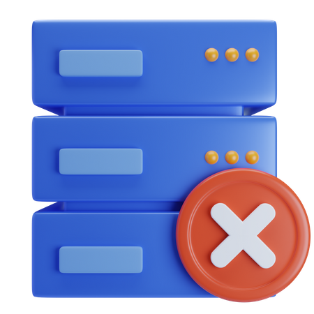

Servers: 0/3

No Minecraft Servers
You don't have any servers yet. Click the button below to create your first server.
Logs
No server selected.
Events
No server selected.
You don't have any servers yet. Click the button below to create your first server.
No server selected.
No server selected.